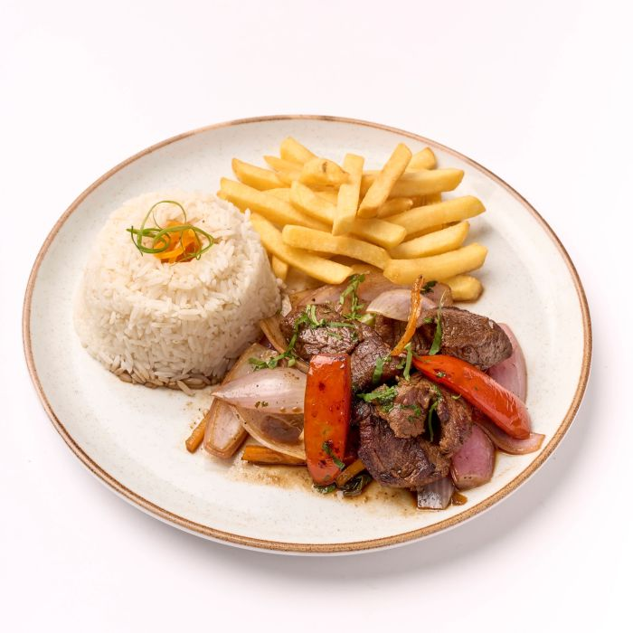

Lomo Saltado

Nuestro Lomo Saltado es uno de los platos más representativos de la gastronomía peruana. Está preparado con carne de res, cebolla, tomate, papas fritas y arroz.
🥩 Ingredientes de nuestro Lomo Saltado
Nuestro Lomo Saltado se prepara con ingredientes frescos que, al combinarse, crean el sabor característico de este delicioso plato peruano.
- 🥩 Carne de res: es el ingrediente principal. Se corta en tiras y se saltea hasta quedar dorada y jugosa.
- 🧅 Cebolla: aporta un sabor ligeramente dulce y una textura crujiente cuando se cocina a fuego alto.
- 🍅 Tomate: aporta frescura, color y un toque de acidez que combina muy bien con la carne.
- 🥢 Sillao: es una salsa de soya que aporta el sabor salado y característico del Lomo Saltado.
- 🍟 Papas fritas: se sirven junto con la carne y aportan una textura crujiente que complementa el plato.
- 🍚 Arroz blanco: acompaña el Lomo Saltado y ayuda a combinar todos los sabores del plato.
- 🌿 Culantro: se utiliza para darle un aroma fresco y un toque especial al plato.
Sobre nuestro restaurante
En El Sabor nos dedicamos a preparar platos tradicionales de la gastronomía peruana, utilizando ingredientes frescos y recetas caseras.